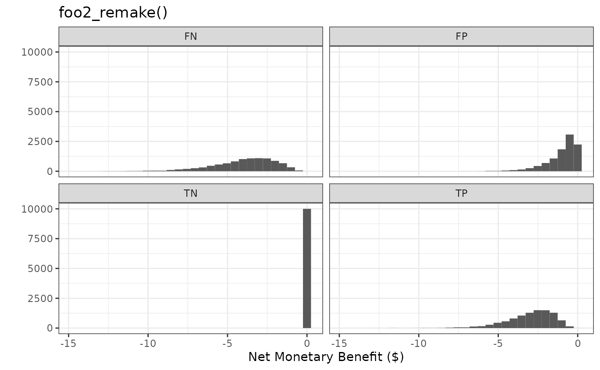
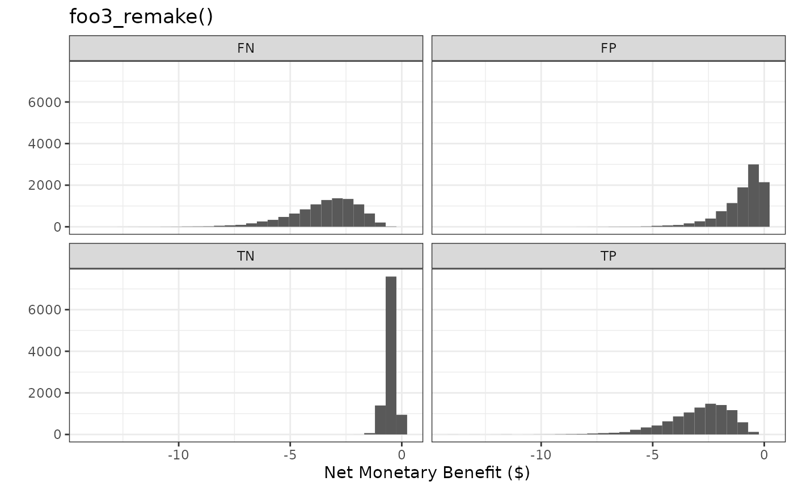
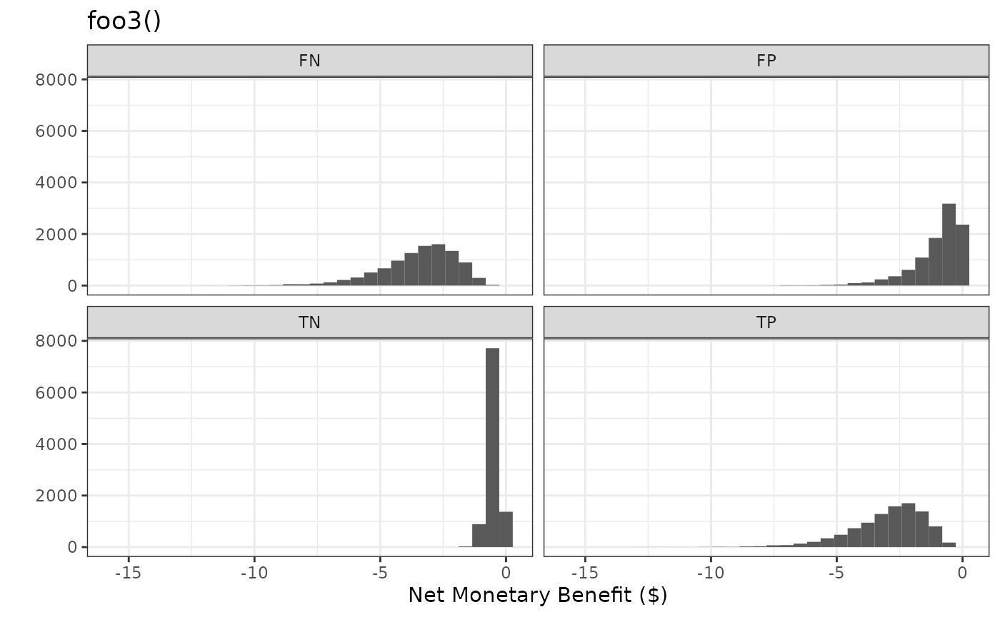
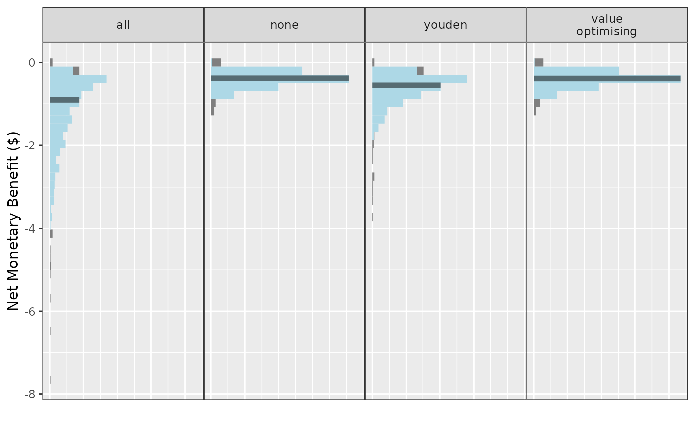

NMB functions
The key aspect of predictNMB is its ability to evaluate
simulated prediction models in terms of Net Monetary Benefit (NMB). To
do so, it requires the user to create and provide functions that assign
NMB values to each of the four possible classifications in a confusion
matrix. These functions create named vectors, which are vectors of
values that provide an NMB value for each possible outcome:
- TP: True Positives, correctly predicted events that lead to necessary treatment
- TN: True Negatives, correctly predicted non-events that avoid unnecessary treatment
- FP: False Positives, incorrectly predicted positives that lead to unnecessary treatment
- FN: False Negatives, incorrectly predicted non-events that lead to a lack of necessary treatment
This vignette will guide you through creating these functions by
hand, as well as using the helper function,
get_nmb_sampler(). We start with key considerations for the
user when creating these functions to best reflect their clinical
context, and finish by using the created functions with
do_nmb_sim().
Key considerations
The functions created here are used for two purposes, depending on
which argument they are passed to, within do_nmb_sim() or
screen_simulation_inputs(). The arguments that require
these functions are:
-
fx_nmb_training: only ever used if thecost_minimisingorvalue_optimisingcutpoint methods are used. These cutpoints aim to maximise the NMB, therefore requiring our best estimates of the NMB values assigned to each classification. -
fx_nmb_evaluation: used for evaluation for all methods. This argument is required to run all simulations inpredictNMB.
The function that generates the named vector used by the
fx_nmb_evaluation argument is re-evaluated at every
iteration of the simulation. In other words, we are sampling from a
range of plausible values for our simulation inputs. This allows us to
incorporate uncertainty, since it is unlikely that we know these costs
or outcomes exactly. By incorporating uncertainty this way, we are
propagating the uncertainty throughout the whole model. This is good
practice in simulation modelling, because our simulation will never be
able to perfectly mirror the reality of finding the best method. If we
include no uncertainty in fx_nmb_evaluation, we are making
the assumption that we know each input of the model
exactly.
Note that we use our best estimates (without uncertainty) for the
fx_nmb_training function. This reflects the fact that when
cutpoints are selected in practice, they usually stay fixed rather than
varying by scenario. It is this fixed value we are evaluating our
simulations against, so we want it to be the same every time to measure
the potential benefit of choosing another cutpoint. This may indicate
that the merits of cost_minimising and
value_optimising cutpoints could be overestimated, which
will be discussed at the end when we explore
do_nmb_sim().
The mean NMB per patient is evaluated at the end of each simulated
iteration based on the inputs we have created (our named vector from
before). For more information, see the associated vignette using
browseVignettes(package = "predictNMB")).
Making functions by hand
This first section describes how to make the functions described
above by hand. For users unfamiliar with R functions, this section may
be unintuitive, and the subsequent get_nmb_sampler()
section may be a gentler introduction. This section introduces all the
flexibility that the user can express when creating these functions, but
may be excessive for many cases.
The following function applies exact estimates for each square of a confusion matrix:
foo1 <- function() {
c(
"TP" = -3,
"FP" = -1,
"TN" = 0,
"FN" = -4
)
}
foo1()
#> TP FP TN FN
#> -3 -1 0 -4Note that NMB values for each classification are equal to or less
than zero. If we frame this around an adverse healthcare event, for
example inpatient falls, our best case scenario is avoiding a fall
without needing to provide any additional fall prevention care beyond
usual patient care (TN = 0). The outcomes are negative
because falls impose an additional burden. The remaining outcomes can be
calculated if we know that the cost of a fall is $4, the cost of the
intervention is $1, and the intervention reduces falls rate by 50%.
For our possible classifications:
- \(TP = -\$1 - \frac{\$4}{2} = -\$3\) (receive the intervention ($1) and falls ($4) occur at half the rate (/2))
- \(FP = -\$1\) (receive the intervention ($1) and avoid the cost of the fall)
- \(TN = \$0\) (do not receive the intervention and avoid the cost of the fall)
- \(FN -\$4\) (do not have the intervention but experience the full cost of the fall ($4))
Users may provide any function without arguments in this form to be more flexible. This allows the user to incorporate uncertainty for model evaluation, because we may not know our inputs exactly. For example, in the function below, we have sampled from distributions of values, rather than setting our expected value of each outcome. Every time we call the function, we get different values based on our chosen distributions - with the exception of true negative (TN) as it is fixed at zero. This sampling procedure is important for evaluation, and is often referred to in health economics as Probabilistic Sensitivity Analysis (PSA).
foo2 <- function() {
intervention_cost <- rgamma(n = 1, shape = 1)
intervention_effectiveness <- rbeta(n = 1, shape1 = 10, shape2 = 10)
fall_cost <- rgamma(n = 1, shape = 4)
c(
"TP" = -intervention_cost - fall_cost * (1 - intervention_effectiveness),
"FP" = -intervention_cost,
"TN" = 0,
"FN" = -fall_cost
)
}
foo2()
#> TP FP TN FN
#> -3.3896708 -0.7831178 0.0000000 -6.8112981
foo2()
#> TP FP TN FN
#> -1.3715667 -0.4669006 0.0000000 -1.6699918
foo2()
#> TP FP TN FN
#> -1.9186843 -0.1758813 0.0000000 -3.8368537Another benefit of allowing the user to define the function structure is that we can also allow the low risk group, or the population whose risk estimates fall below the probability threshold, to receive an intervention rather than nothing.
This can be preferable when there is more than one available
intervention to use, and one is more costly (and presumably effective)
than the other. For example, all patients in a hospital might have a
medication management plan in place to reduce falls risk but the high
risk group might also receive additional surveillance from nurses. This
way, we can assign all high risk patients to receive the high cost and
highly effective intervention, and all low risk patients to receive the
low cost and less effective intervention. Extending foo2()
to create the function below, we assign the low cost intervention $0.5
and a reduction in falls of 30%.
foo3 <- function() {
# intervention for high risk (hr) group
hr_intervention_cost <- rgamma(n = 1, shape = 1)
hr_intervention_effectiveness <- rbeta(n = 1, shape1 = 10, shape2 = 10)
# intervention for low risk (lr) group
lr_intervention_cost <- rgamma(n = 1, shape = 0.5 * 10, rate = 1 * 10)
lr_intervention_effectiveness <- rbeta(n = 1, shape1 = 10, shape2 = 30)
fall_cost <- rgamma(n = 1, shape = 4)
c(
"TP" = -hr_intervention_cost - fall_cost * (1 - hr_intervention_effectiveness),
"FP" = -hr_intervention_cost,
"TN" = -lr_intervention_cost,
"FN" = -lr_intervention_cost - fall_cost * (1 - lr_intervention_effectiveness)
)
}
foo3()
#> TP FP TN FN
#> -3.5867902 -1.9788698 -0.0709252 -1.9643183
foo3()
#> TP FP TN FN
#> -1.2448485 -0.0125581 -0.5058715 -3.1126365
foo3()
#> TP FP TN FN
#> -2.05368678 -0.08332999 -0.65760716 -4.45966089Now that we are providing an intervention and associated cost to the low risk group, there is a negative NMB assigned to true negative (TN) groups. But in exchange, we have reduced the costs of false negatives (FNs), because at least these patients are now receiving an intervention, albeit a less effective one.
It’s important to note that while these NMB values are negative, this doesn’t imply that we are worse off by implementing prediction models or treatments. We are simply trying to pick the least bad option. This becomes more apparent when we set a reference strategy, which is discussed in more detail in the introductory and detailed example vignettes.
Making functions using get_nmb_sampler()
The previous section demonstrates how to make functions by hand and a
general approach to thinking about intervention costs and effects. This
same approach is used by get_nmb_sampler() but abstracts
the actual creation of the function away to make things more straight
forward for the user. It can be easier to apply for simple cases, but
removes some of the ability to do complex modelling.
To replicate what we created as foo1(), we pass these
costs as separate arguments. The function is created, with the output
get_nmb_sampler(). Recall:
The cost of the fall is $4, the cost of the intervention is $1, and the intervention reduces the rate of falls by 50%.
library(predictNMB)
foo1_remake <-
get_nmb_sampler(
outcome_cost = 4,
high_risk_group_treatment_cost = 1,
high_risk_group_treatment_effect = 0.5
)
foo1_remake()
#> TP FP TN FN
#> -3 -1 0 -4
foo1()
#> TP FP TN FN
#> -3 -1 0 -4The arguments are passed as costs (outcome_cost and
high_risk_group_treatment_cost) and the treatment effect.
high_risk_group_treatment_effect is the rate reduction of
the event for those receiving the treatment, which in our case is a 50%
reduction (0.5).
First, we write some code for making plots of sampled NMB values from a given function:
library(tidyr)
library(ggplot2)
plot_nmb_dist <- function(f, n = 10000) {
data <- do.call("rbind", lapply(1:n, function(x) f()))
data_long <- pivot_longer(
as.data.frame(data),
cols = everything(),
names_to = "classification",
values_to = "NMB"
)
ggplot(data_long, aes(NMB)) +
geom_histogram() +
facet_wrap(~classification) +
theme_bw() +
labs(y = "", x = "Net Monetary Benefit ($)")
}Now we can incorporate uncertainty by passing argument-less, or blank
functions (function()), followed by a sampler
(e.g. rgamma), which generate sampled values as the
arguments. When calling get_nmb_sampler(), we specify the
values as the blank functions, which are evaluated every time the
returned function is called. These let us see the uncertainty of each
classification graphically.
foo2_remake <-
get_nmb_sampler(
outcome_cost = function() rgamma(n = 1, shape = 4), # our blank function, followed by a sampler
high_risk_group_treatment_cost = function() rgamma(n = 1, shape = 1),
high_risk_group_treatment_effect = function() rbeta(n = 1, shape1 = 10, shape2 = 10)
)
plot_nmb_dist(foo2_remake) + ggtitle("foo2_remake()")
#> `stat_bin()` using `bins = 30`. Pick better value with `binwidth`.
plot_nmb_dist(foo2) + ggtitle("foo2()")
#> `stat_bin()` using `bins = 30`. Pick better value with `binwidth`.
We can also create an NMB function which replicates our prior scenario where the low-risk group is given a cheaper and less effective intervention.
foo3_remake <-
get_nmb_sampler(
outcome_cost = function() rgamma(n = 1, shape = 4),
high_risk_group_treatment_cost = function() rgamma(n = 1, shape = 1),
high_risk_group_treatment_effect = function() rbeta(n = 1, shape1 = 10, shape2 = 10),
low_risk_group_treatment_cost = function() rgamma(n = 1, shape = 0.5 * 10, rate = 1 * 10),
low_risk_group_treatment_effect = function() rbeta(n = 1, shape1 = 10, shape2 = 30)
)
plot_nmb_dist(foo3_remake) + ggtitle("foo3_remake()")
#> `stat_bin()` using `bins = 30`. Pick better value with `binwidth`.
plot_nmb_dist(foo3) + ggtitle("foo3()")
#> `stat_bin()` using `bins = 30`. Pick better value with `binwidth`.
In addition to specifying the cost of the outcome, we can also
incorporate health-related quality of life in the form of
quality-adjusted life years (QALYs), and our willingness to pay (WTP)
for these QALYs. These are included as inputs to
get_nmb_sampler() to evaluate the overall net monetary
benefit using:
-
outcome_cost: single value associated with the event -
wtp: willingness to pay.wtpis multiplied by theqalys_lostinput to evaluate NMB associated with the the event. -
qalys_lost: quality-adjusted life-years lost due to the event.qalys_lostis multiplied by thewtpinput to evaluate NMB associated with the event.
You must provide EITHER the outcome_cost alone OR the
wtp AND qalys_lost. You can also provide all
three if, for example, there are some fixed costs associated with the
event separate to the QALYs lost. For example, following a fall, every
patient may have an X-ray, and this would be a separate cost to the
QALYs lost and our willingness to pay for those QALYs due to the
fall.
Returning to our falls function, if our WTP is $8 and each fall is associated with a 0.5 QALY lost (on average), then this would be equivalent to our fixed cost of $4. By having these included in the function as separate arguments, we can more clearly represent each input to the model and provide more realistic representations. We can use this to generate estimates (and uncertainty) for the QALYs lost due to the event we are evaluating and our WTP to avoid the event.
foo4 <-
get_nmb_sampler(
wtp = 8,
qalys_lost = 0.5,
high_risk_group_treatment_cost = 1,
high_risk_group_treatment_effect = 0.5
)
foo4()
#> TP FP TN FN
#> -3 -1 0 -4
foo1()
#> TP FP TN FN
#> -3 -1 0 -4Passing these functions to do_nmb_sim()
The NMB functions are passed to the do_nmb_sim()
function via the fx_nmb_training and
fx_nmb_evaluation arguments. The former is purely for
selecting a cutpoint if you’re using either the
'cost_minimising' or 'value_optimising'
cutpoint methods. Here, we will use the 'value_optimising'
cutpoint method alongside the Youden index and a treat all/none
strategy.
In this first example, we pass foo1 to the
do_nmb_sim() function, which is our function that always
provides the same values for every simulation, as if we
know the exact outcome of each possible prediction. As
mentioned before, see the other vignettes for more information on the
inputs for the do_nmb_sim() function.
simulation_res1 <- do_nmb_sim(
sample_size = 200, n_sims = 500, n_valid = 10000, sim_auc = 0.7,
event_rate = 0.1, fx_nmb_training = foo1, fx_nmb_evaluation = foo1,
cutpoint_methods = c("all", "none", "youden", "value_optimising")
)
plot(simulation_res1)
As mentioned previously, the problem with using foo1 for
fx_nmb_evaluation is that we don’t really know for sure how
effective our intervention is, what the burden of the event is, and how
much things cost. This is why we incorporate uncertainty into the
evaluation function, but ONLY the evaluation function and not the
training function. If we use an NMB function that incorporates
uncertainty for selecting the cutpoint in fx_nmb_training,
this would mean we picked costs randomly and used those on our data to
select a cutpoint. This would be unlikely in practice, as we would use
our expected value (best estimates) to determine cutpoints in
reality.
get_nmb_sampler() also offers the ability to extract
these fixed (expected) values by sampling from the distributions and
using the column means for fx_nmb_training.
For example, using foo2_remake(), we use
get_nmb_sampler() in the same way but include
use_expected_values = TRUE so that it returns a function
that gives fixed values for training:
foo2_remake <-
get_nmb_sampler(
outcome_cost = function() rgamma(n = 1, shape = 4),
high_risk_group_treatment_cost = function() rgamma(n = 1, shape = 1),
high_risk_group_treatment_effect = function() rbeta(n = 1, shape1 = 10, shape2 = 10)
)
foo2_remake_training <-
get_nmb_sampler(
outcome_cost = function() rgamma(n = 1, shape = 4),
high_risk_group_treatment_cost = function() rgamma(n = 1, shape = 1),
high_risk_group_treatment_effect = function() rbeta(n = 1, shape1 = 10, shape2 = 10),
use_expected_values = TRUE
)
foo2_remake_training()
#> TP FP TN FN
#> -3.012466 -0.997511 0.000000 -4.044140
foo2_remake_training()
#> TP FP TN FN
#> -3.012466 -0.997511 0.000000 -4.044140
foo2_remake_training()
#> TP FP TN FN
#> -3.012466 -0.997511 0.000000 -4.044140In many cases (including this one), this will give similar values to
using the parameter estimates (i.e. foo1()), but not
always. The values from this process should be more stable than using
the estimates.
simulation_res2 <- do_nmb_sim(
sample_size = 200, n_sims = 500, n_valid = 10000, sim_auc = 0.7,
event_rate = 0.1, fx_nmb_training = foo2_remake_training, fx_nmb_evaluation = foo2_remake,
cutpoint_methods = c("all", "none", "youden", "value_optimising")
)
plot(simulation_res2)
This changes our results to incorporate more uncertainty. This is important in simulation modelling as it accounts for the possible differences between our simulation and reality. Using values from the literature would likely reduce the uncertainty somewhat, but that might only be desirable if we are confident that our simulated model closely resembles the scenario in the literature.